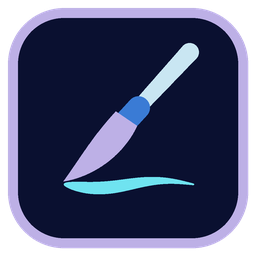

SharkPaint
Dibujo y pintura digital con capas y presión de lápiz, gratis para Windows 🦈🎨
EARLY ACCESS
Descargar para Windows
Buscando la última versión…
Windows 10 y 11 (64 bits)
¿Prefieres sin instalar? Versión portable (.zip)
· Todas las versiones
¿Qué trae? ✨
Trazo con presión
Tu tableta gráfica controla el grosor y el flujo de cada pincel, con estabilizador para líneas limpias.
Capas de verdad
Opacidad, modos de fusión, bloqueo de transparencia y una miniatura de cada capa.
Pinceles a tu medida
Lápiz, Tinta, Marcador y Aerógrafo, con tamaño, dureza, flujo y espaciado ajustables.
Herramientas de pintura
Borrador, difuminar, relleno que respeta tus líneas, cuentagotas y mover capa.
Lienzo libre
Zoom, rotación y volteo para dibujar desde el ángulo cómodo, también con dos dedos.
Tus dibujos, en tu PC
Proyectos .spaint con todas sus capas y exportación a PNG. Nada sale de tu equipo.
Así se ve 📸
Requisitos 🖥️
- Windows 10 u 11 de 64 bits.
- Recomendado: una tableta gráfica con Windows Ink activado en su controlador, para la presión del lápiz. Con ratón también funciona.
Antes de instalar 💙
Windows puede avisar («Windows protegió tu PC») porque SharkPaint aún no tiene firma digital:
pulsa Más información → Ejecutar de todas formas.
Es software libre: código en GitHub, bajo la licencia GPL 3.0.
Es software libre: código en GitHub, bajo la licencia GPL 3.0.
Apoya SharkPaint 💛
SharkPaint es gratis y siempre lo será. Si te ayuda, puedes invitarme a un café.
Apoya SharkPaint